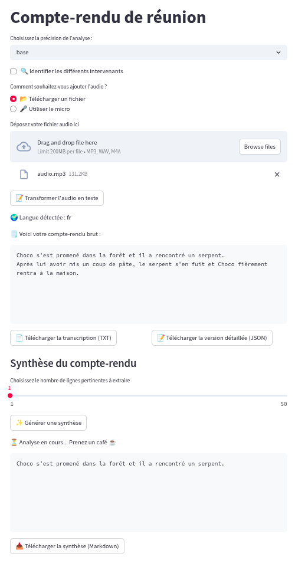

Développer une UI pour Whisper avec Streamlit
Posté le 03/04/2025 dans IA

Whisper est un modèle IA de speech-to-text créé par OpenAI et qui marche plutôt pas mal. L'outil est open source et s'utilise en ligne de commande directement. Il te permet de transcrire de l'audio en texte, de faire des traductions directes en anglais, de traduire des vidéos pour en générer des sous-titres, etc.
Mais pourquoi ne pas se faire une petite app avec streamlit, histoire de l'utiliser plus facilement et d'avoir une UI sympathique pour les utilisateurs ?
Prérequis
Bon, forcément, il te faut python. Pour cet article, j'ai utilisé la version 3.9 mais ça devrait marcher avec les versions plus récentes.
Tu te fais un environnement virtuel et tu installes les dépendances suivantes :
pip install openai-whisper
pip install streamlit
pip install pyannote.audio
pip install sumy
En gros, l'idée ici sera de permettre à l'utilisateur de faire une transcription d'un audio avec whisper, puis d'identifier automatiquement les personnes qui parlent avec pyannote (diarization), et enfin de sortir les phrases les plus importantes de la transcription pour en faire un résumé avec sumy.
Développement
Tu peux te créer un fichier main.py pour ton app streamlit et on va attaquer le code.
On commence par télécharger nltk qui sera nécessaire pour sumy, pour la tokenisation des phrases.
import nltk
nltk.download("punkt", quiet=True)
nltk.download("punkt_tab", quiet=True)
Ensuite on met un titre et on affiche un selectbox pour choisir le modèle whisper ainsi qu'une checkbox pour activer la diarization.
import streamlit as st
st.title("Compte-rendu de réunion")
WHISPER_MODEL_OPTIONS = ["tiny", "base", "small", "medium", "large", "turbo"]
selected_model = st.selectbox("Choisissez la précision de l'analyse :", WHISPER_MODEL_OPTIONS, index=1)
diarization_enabled = st.checkbox("🔍 Identifier les différents intervenants", value=False)
On charge alors le modèle whisper et le modèle pyannote en cache pour améliorer les performances. Note qu'il te faut un token Hugging Face pour pyannote. On prend également en compte CUDA pour utiliser le GPU si tu en as un. Pour installer CUDA, je te laisse voir directement avec la documentation officielle.
import whisper
import torch
from pyannote.audio import Pipeline
@st.cache_resource
def load_whisper_model(model_name: str) -> whisper.Whisper:
device = "cuda" if torch.cuda.is_available() else "cpu"
return whisper.load_model(model_name, device=device)
@st.cache_resource
def load_diarization_model() -> Pipeline:
access_token = "ton-token-huggingface"
pipeline = Pipeline.from_pretrained("pyannote/speaker-diarization-3.1", use_auth_token=access_token)
device = torch.device("cuda" if torch.cuda.is_available() else "cpu")
pipeline.to(device)
return pipeline
model = load_whisper_model(selected_model)
diarization_model = load_diarization_model() if diarization_enabled else None
Ensuite, on propose à l'utilisateur s'il veut utiliser son micro ou uploader un fichier audio.
input_option = st.radio(
"Comment souhaitez-vous ajouter l'audio ?", ("📂 Télécharger un fichier", "🎤 Utiliser le micro")
)
On gère également la transcription et le résumé en session pour éviter que streamlit ne relance les fonctions à chaque fois qu'il est rafraîchi par un clic sur un bouton.
if "transcription_result" not in st.session_state:
st.session_state.transcription_result = None
st.session_state.summary = None
if "previous_input_option" in st.session_state and st.session_state.previous_input_option != input_option:
st.session_state.transcription_result = None
st.session_state.summary = None
st.session_state.previous_input_option = input_option
On attaque maintenant du lourd, la fonction de transcription.
from typing import Any
@st.cache_data
def transcribe_audio(file_path: str) -> dict:
return model.transcribe(file_path, language=None)
@st.cache_data
def diarize_audio(file_path: str) -> Any:
return diarization_model(file_path) if diarization_model is not None else None
import torchaudio
import torchaudio.transforms as T
import copy
import os
from functools import cache
@cache
def get_random_name(speaker: str) -> str:
"""
Return a random name for the speaker.
"""
names = [
"Alice",
"Bob",
"Charlie",
"David",
"Emma",
"Fanny",
"Gaston",
"Hugo",
"Isabelle",
"Jules",
]
index = int(speaker.split("_")[-1])
return names[index] if index < len(names) else f"Locuteur {index}"
def assign_speakers(transcription: dict, diarization: Any) -> dict:
new_transcription = copy.deepcopy(transcription)
for seg in new_transcription["segments"]:
max_overlap = 0
assigned_speaker = None
for turn, _, speaker in diarization.itertracks(yield_label=True):
overlap_start = max(seg["start"], turn.start)
overlap_end = min(seg["end"], turn.end)
overlap_duration = max(0, overlap_end - overlap_start)
seg_duration = seg["end"] - seg["start"]
overlap_ratio = overlap_duration / seg_duration
if overlap_ratio > max_overlap:
max_overlap = overlap_ratio
assigned_speaker = speaker
if assigned_speaker:
seg["speaker"] = get_random_name(assigned_speaker)
return new_transcription
def convert_and_resample_audio(input_path: str, output_path: str, target_sr=16000) -> None:
waveform, sr = torchaudio.load(input_path)
if sr != target_sr:
resampler = T.Resample(orig_freq=sr, new_freq=target_sr)
waveform = resampler(waveform)
torchaudio.save(output_path, waveform, target_sr)
def process_transcription(tmp_filename: str) -> None:
resampled_audio = None
try:
st.write("⏳ Analyse en cours... Prenez un café ☕")
transcription = transcribe_audio(tmp_filename)
if diarization_enabled:
st.write("🔍 Identification des intervenants en cours...")
resampled_audio = tmp_filename.rsplit(".", 1)[0] + "_resampled.wav"
convert_and_resample_audio(tmp_filename, resampled_audio)
diarization = diarize_audio(resampled_audio)
transcription = assign_speakers(transcription, diarization)
st.session_state.transcription_result = transcription
st.session_state.summary = None
except Exception as e:
st.error(f"❌ Erreur pendant la transcription/diarisation : {str(e)}")
finally:
os.remove(tmp_filename)
if diarization_enabled and resampled_audio is not None:
os.remove(resampled_audio)
Bon, avant de passer à la suite, on va prendre du temps pour détailler tout ça.
La fonction process_transcription commence par transcrire l'audio avec whisper.
Puis, si on a la diarization d'activée, il nous faut d'abord resampler l'audio à 16kHz pour que pyannote puisse le traiter. Pyannote va alors analyser l'audio pour nous envoyer les différents segments avec les intervenants identifiés.
Enfin, on assigne les intervenants aux segments audio de whisper.
On essaye de gérer le chevauchement des segments de pyannote avec les segments de whisper pour assigner le bon intervenant à chaque phrase.
On n'oublie pas de supprimer les fichiers temporaires à la fin et on met les résultats en session.
Maintenant qu'on a nos fonctions prêtes, on va pouvoir les appeler en fonction des 2 cas d'usages : micro ou upload de fichier.
import tempfile
import mimetypes
if input_option == "📂 Télécharger un fichier":
uploaded_file = st.file_uploader("Déposez votre fichier audio ici", type=["mp3", "wav", "m4a"])
if uploaded_file is not None:
if st.button("📝 Transformer l'audio en texte"):
file_extension = uploaded_file.name.split(".")[-1]
mime_type, _ = mimetypes.guess_type(uploaded_file.name)
if mime_type and mime_type.startswith("audio"):
with tempfile.NamedTemporaryFile(delete=False, suffix=f".{file_extension}") as tmp_file:
tmp_file.write(uploaded_file.read())
tmp_filename = tmp_file.name
process_transcription(tmp_filename)
else:
st.error("❌ Format non reconnu ! Merci d'ajouter un fichier audio valide.")
elif input_option == "🎤 Utiliser le micro":
if "audio_data" not in st.session_state:
st.session_state.audio_data = None
st.write("🎤 Cliquez pour enregistrer votre réunion")
audio_data = st.audio_input("Enregistrez votre message vocal")
if audio_data:
audio_bytes = audio_data.getvalue()
st.session_state.audio_data = audio_bytes
st.write("✅ Enregistrement terminé.")
if "audio_data" in st.session_state and st.session_state.audio_data:
if st.button("📝 Transformer l'audio en texte"):
st.session_state.transcription_result = None
st.session_state.summary = None
with tempfile.NamedTemporaryFile(delete=False, suffix=".wav") as tmp_file:
tmp_file.write(st.session_state.audio_data)
tmp_filename = tmp_file.name
process_transcription(tmp_filename)
Et voilà ! On peut alors afficher la transcription brute :
import json
if "transcription_result" in st.session_state and st.session_state.transcription_result:
result = st.session_state.transcription_result
detected_language = result["language"]
text_transcription = result["text"]
st.write(f"🌍 Langue détectée : **{detected_language}**")
transcript = "\n".join(f"{seg['text']}" for seg in st.session_state.transcription_result["segments"])
st.write("🗒️ Voici votre compte-rendu brut :")
st.code(transcript, language="plaintext", height=200, wrap_lines=True)
json_content = json.dumps(result, indent=4)
A partir de maintenant, tout le reste du code se trouvera dans le bloc du if "transcription_result" in st.session_state.
On propose également de la télécharger en JSON et en TXT :
col1, col2 = st.columns(2)
with col1:
st.download_button("📄 Télécharger la transcription (TXT)", transcript, "transcription.txt", "text/plain")
with col2:
st.download_button(
"📝 Télécharger la version détaillée (JSON)", json_content, "transcription.json", "application/json"
)
Et même chose si on a la diarization activée :
if diarization_enabled:
st.write("🗣️ Transcription avec intervenants")
transcript_with_speakers = "\n".join(
f"[{seg['start']:.1f}s - {seg['end']:.1f}s] {seg.get('speaker', 'Speaker ?')}: {seg['text']}"
for seg in st.session_state.transcription_result["segments"]
)
st.code(transcript_with_speakers, height=200, wrap_lines=True)
st.download_button(
"📑 Télécharger la version annotée avec les intervenants",
transcript_with_speakers,
"transcript_with_speakers.txt",
"text/plain",
)
Le plus gros est fait ! On peut maintenant passer à la génération du résumé. Pour se faire, on va utiliser sumy avec LexRank.
from sumy.parsers.plaintext import PlaintextParser
from sumy.nlp.tokenizers import Tokenizer
from sumy.summarizers.lex_rank import LexRankSummarizer
def summarize_text(text: str, num_sentences=5, language="french") -> str:
try:
tokenizer = Tokenizer(language)
except Exception:
raise ValueError(f"Langue non supportée par le tokenizer : {language}")
parser = PlaintextParser.from_string(text, tokenizer)
summarizer = LexRankSummarizer()
summary = summarizer(parser.document, num_sentences)
return " ".join(str(sentence) for sentence in summary)
@st.cache_data
def summarize(text: str, num_sentences: int, language: str) -> str:
return summarize_text(text, num_sentences=num_sentences, language=language)
st.subheader("Synthèse du compte-rendu")
if "summary" not in st.session_state:
st.session_state.summary = None
num_sentences = st.slider(
"Choisissez le nombre de lignes pertinentes à extraire", min_value=1, max_value=50, value=10
)
if st.button("✨ Générer une synthèse"):
try:
st.write("⏳ Analyse en cours... Prenez un café ☕")
summary = summarize(text_transcription, num_sentences=num_sentences, language=detected_language)
st.session_state.summary = summary
except ValueError as e:
st.error(str(e))
if st.session_state.summary:
st.code(st.session_state.summary, language="plaintext", height=200, wrap_lines=True)
st.download_button(
"📥 Télécharger la synthèse (Markdown)",
st.session_state.summary,
"synthese.md",
"text/markdown",
)
Et voilà ! On a une UI sympathique pour faire de la transcription et de la synthèse de texte.
Tu peux lancer ton app via :
streamlit run main.py
Le rendu final ressemble à ça :
En piste d'amélioration qu'on verra plus tard, on pourra utiliser les phrases extraites par sumy pour les passer à un LLM afin de générer un compte-rendu stylisé en Markdown.
Et voilà ! Plus besoin de prendre des notes pendant tes réunions, laisse whisper s'en charger !